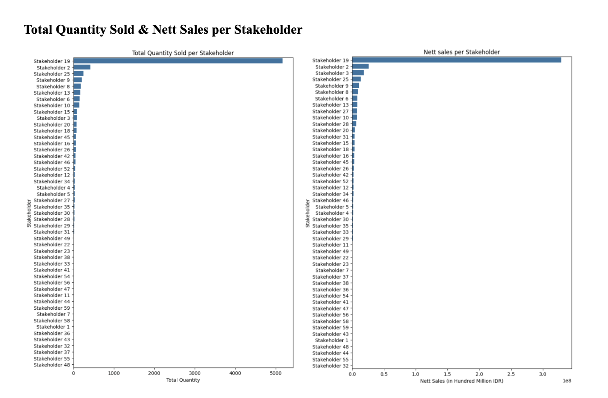

Talitha Rhea Abieza
I specialize in consumer insights and data storytelling, transforming complex data into actionable business insights using Power BI, Google Looker Studio, and Tableau for visualization, alongside SQL, R, and Python for data preparation, analysis, and modeling. Backed by a Master's degree in Marketing Analytics & Insights and five years of experience at Tokopedia, this portfolio showcases a selection of my work.
 Indonesia
Indonesia
 Singapore
Singapore


 Product Category
Product Category
 Stakeholder Group
Stakeholder Group


Talitha Rhea Abieza
I specialize in consumer insights and data storytelling, transforming complex data into actionable business insights using Power BI, Google Looker Studio, and Tableau for visualization, alongside SQL, R, and Python for data preparation, analysis, and modeling. Backed by a Master's degree in Marketing Analytics & Insights and five years of experience at Tokopedia, this portfolio showcases a selection of my work.
Indonesia
Singapore
Product Category
Stakeholder Group
Channel Performance Dashboard (MSIG Indonesia & Singapore)
Project Context
As part of the program from NUS MSc MAI, I handled a real client project-based analytics for MSIG Asia Pte Ltd in Singapore, working directly with MSIG team to identify key regional differences and market-specific strategies.
Key Contributions & Ownership
- Dashboard Design: Independently designed and built Power BI dashboards for both Indonesia and Singapore markets.
- Data Consolidation & Automation: Consolidated raw consumer data from different sources, created target inputs, and turned them into automated data calculations.
- Stakeholder Impact: Generated more comprehensive and meaningful insights for stakeholders, including target completion and direct calculation from disparate sources.
Dashboard Previews
Thompson Sampling Ad Creative Optimization (XYZ Coffee)
Project Overview
This project explores real-time ad creative optimization using a Thompson Sampling multi-armed bandit algorithm. Unlike traditional static A/B testing, which can waste traffic on underperforming creatives, Thompson Sampling dynamically shifts traffic toward winning variants while balancing the need for continued exploration.
Core Objectives
- Maximize real-time click-through rates (CTR) and conversion volume.
- Identify the root statistical cause behind creative performance differences.
- Reduce the "cost of exploration" inherent in standard experimental design.
Key Methodologies
Implemented Thompson Sampling to dynamically shift impressions toward higher-performing creatives based on Bayesian probability.
Utilized Python to deconstruct creatives, analyzing individual elements (motion vs. static, discount badge) as independent predictors.
Regression revealed that animated elements actually reduced CTR (p<0.01), as movement distracted from the primary offer.
Visualizations

Interactive Customer Analytics practice Dashboard
Project Overview
This is an independent practice project developed to master advanced Tableau features and interactive dashboard design. Using a standard Kaggle marketing dataset, I modeled customer behavior, analyzed purchasing channels, and tracked campaign performance.
I focused on creating an interactive story, allowing users to drill down into specific segments via dynamic filtering.
Dashboard Screenshot
CRM Analytics: Modeling Missed Conversions and Churn Indicators (Duolingo)
Project Overview
This project analyzed a simulated CRM database modeled after Duolingo's freemium subscription business, combining user profiles, lesson activity logs, marketing email interaction data, and transactional history. The goal was to identify critical engagement drop-off points for free users and early churn indicators for paid subscribers.
Key Analytical Focus Areas
- Conversion Thresholds: Modeled upgrade likelihood based on lesson frequency and streak duration using complex SQL joins and window functions.
- Missed Conversions: Identified "highly engaged but non-converting" free users by querying lesson activity against purchase logs.
- Churn Prediction: Modeled subscription renewal behavior across different tiers (Super vs. Max) and payment cadence (Auto-renew vs. manual).
Data Visualizations (derived from SQL output)
Market Basket Analysis (XYZ Restaurant, Indonesia)
Project Overview
Conducted association rule mining in R on transactional sales data from a local Indonesian F&B chain to evaluate item co-occurrences across different dayparts (noon vs. night) and optimize menu engineering.
Key Insights & Applications
- Temporal Sales Spikes: Sales peaks align heavily around 14:00 (lunch) and 20:00 (dinner), establishing clear bounds for daypart-specific promotions.
- Noon Strategy: High association between heavy meals and non-coffee beverages (e.g., Fried Rice + Mineral Water).
- Night Strategy: Shift toward indulgence and social pairing, showing strong lift between desserts and coffee (e.g., Chocolate Cheese Fried Banana + Signature Milk Coffee).
Analysis & Visualizations


B2B Sales Regression Analysis (XYZ Company, Indonesia)
Project Overview
Built an explanatory OLS regression model in Python to identify key demand drivers across 3,700+ B2B transactions for an Indonesian flavoring manufacturer.
Key Findings
- Pricing Sensitivity: Identified a significant volume lift (+450%) associated with specific discount tiers.
- Commercial Optimization: Recommended refined discount structures to balance order volume growth with profit margin preservation.
Analysis & Visualizations

Overall performance Dashboard (Tokopedia Physical Goods)
Project Overview
This is an independent practice Dashboard replicating an enterprise-level reporting system modeled on the Tokopedia Physical Goods vertical. Built using Google Looker Studio and simulated dataset, it consolidates transaction performance, MoM growth metrics, and product category trends into a single automated view.
Core Features
- L0 Overview: Macro-level vertical tracking of sales, orders, and active listings.
- Category Deep-Dive: Granular performance monitoring across product levels (L0 to L2 categories).
- Growth Insights: Dynamic comparison widgets for Month-over-Month (MoM) and Year-over-Year (YoY) performance.
Dashboard Screenshots